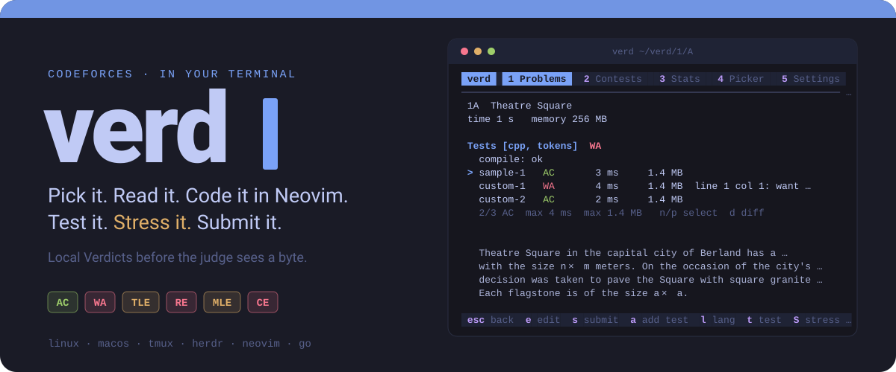
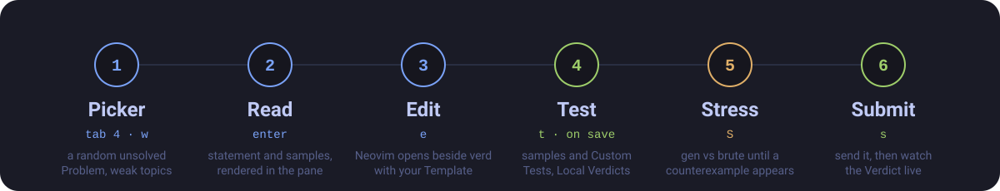
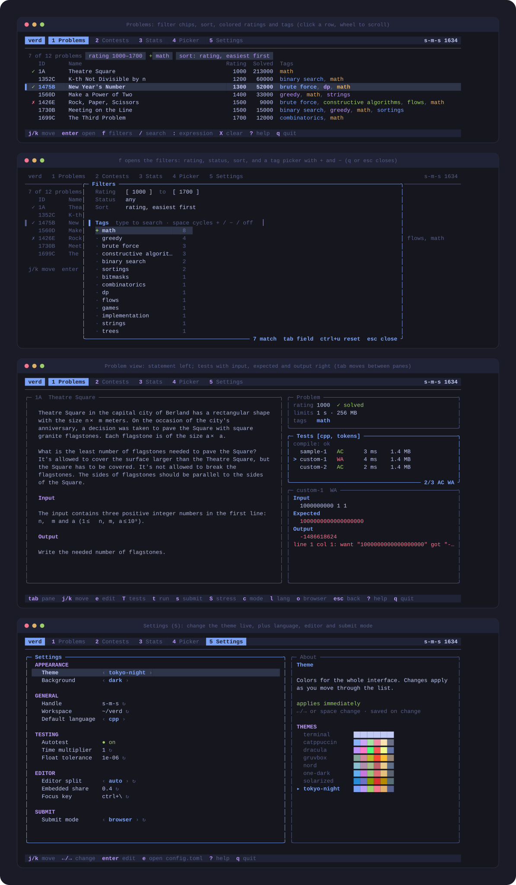

Pick a problem from Codeforces or CSES, read it, write the solution in Neovim, test it locally, hunt counterexamples, submit, and watch the verdict arrive. One keyboard-driven TUI. No browser tab for the loop.
$ curl -fsSL https://raw.githubusercontent.com/moneytosms/verd/main/install.sh | sh
or go install github.com/moneytosms/verd/cmd/verd@latest

Local first, offline tolerant, and out of your way.
AC, WA, TLE, RE, MLE and CE are decided on your machine, with time and memory per test, before you spend a Codeforces submission.
It opens in a tmux or herdr split beside verd, or embedded in the pane. Run verd test, submit and stress from inside Neovim.
Per-language gen and brute templates. S finds a counterexample and shows the diff; w saves it as your next custom test.
Solved marks, per-topic stats, a rating chart, and a problem picker with a weak-topics preset.
Everything renders from a local SQLite cache. The network refreshes it in the background and respects rate limits.
Codeforces plus the CSES Problem Set in one list. Switch providers on in Settings, filter by source, mark tasks solved by hand. USACO is next; adding a provider is one fetcher.
Neovim by default. Switch to vim, helix, nano, micro, emacs or VS Code in Settings, live.
Browser handoff copies the solution, opens the submit page and tracks the verdict. Direct submit is opt-in and experimental.
Click tabs, rows, panes and settings. Drag the divider to resize. Drag over the statement or a test to select lines and copy them. Press y to copy the whole question with difficulty, tags and every test, neatly laid out.
Eight themes ship, switchable live in the Settings tab: tokyo-night, dracula, catppuccin, gruvbox, nord, one-dark, solarized and your terminal's own.


Press ? on any screen for its key list.
A verd test started from Neovim talks to the running TUI over a Unix socket and shows up in its pane. With no TUI running it runs headless and prints the result.
| split | behavior |
|---|---|
| auto | tmux, else herdr, else suspend |
| tmux / herdr | force that multiplexer |
| embedded | Neovim inside verd's window |
| suspend | hand over the terminal |
vim.keymap.set("n", "<leader>vt", function() verd("test") end) vim.keymap.set("n", "<leader>vs", function() verd("submit") end) vim.keymap.set("n", "<leader>vx", function() verd("stress") end) -- exit 0 only if every test is AC -- exit 1 the thing failed, 2 verd could not
Exit codes: 0 success, 1 the thing you asked about failed, 2 verd could not do it.
| command | what it does |
|---|---|
| verd | Open the TUI. --here keeps solutions in the current directory. |
| verd init | Write the default config and starter templates. |
| verd test <file> | Run sample and custom tests. |
| verd stress <file> | Search for a counterexample. |
| verd submit <file> | Submit and track the verdict. |
| verd login | Save a browser session for direct submit. |
Linux and macOS, amd64 and arm64. You also need nvim and a compiler for your languages.
# install the latest release curl -fsSL https://raw.githubusercontent.com/moneytosms/verd/main/install.sh | sh # set your handle, then go verd init verd
Pin a version with VERD_VERSION=v0.1.4. Not affiliated with Codeforces or CSES.